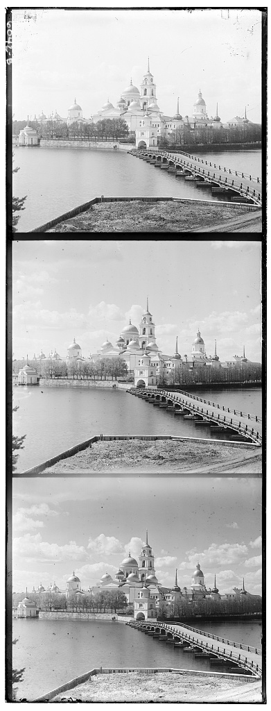

CS 180: Computer Vision and Computational Photography
Project Overview
Sergei Mikhailovich Prokudin-Gorskii was a Russian photographer who pioneered color photography in the early 20th century. He took
thousands of color pictures, each a series of three exposures of a scene onto a glass plate using red, green, and blue filters.
Each of these plates have been digitized as a single image containing the different plates aligned vertically on each other, with
the blue plate on top, the green plate in the middle, and the red plate on the bottom.
The goal of this project is to take the digitized versions of those glass plates and to employ image processing techniques to align
the plates to produce a full color photograph with as few artifacts as possible.
Three-plate image of the town of TobolskThree-plate image of the town of a CathedralThree-plate image of the town of a Monastery
Algorithm
There are two key algorithms used for colorization. The first one being the Exhaustive Alignment Process, used for smaller jpg
images, and the second one being the Coarse-to-Fine Image Pyramid Strategy, used for tif larger images. Both of these involve separating
the three plates in each image and using some procedure to align them correctly.
Exhaustive Alignment
This algoirhtm involved exhaustively searching over a window of possible displacements ([-15,15] pixels) to align the red and green color plates
over the blue color plate, score each one using some image matching metric, and take the displacement with the best score. The one used here was the L2 norm also
known as the Euclidean Distance.
Coarse-to-Fine Image Pyramid
As the images become larger, exhaustive alignment becomes time-consuming. The alternative was to use the image pyramid approach. Downsized versions
of the color plates are created. At the smallest scale, the exhaustive search process is repeated over the same displacement window noting down
the displacement vector for the red and green color plates. As we proceed down the pyramid to the larger scaled images, we reduce the search space as we
start searching from the scaled up displacement vector from the previous scale instead of searching from scratch!
For an estimate of the downscaling the process, the most scaled down image was roughly 200x240 pixels. At the smallest scale (top of the pyramid), the
search space was [-15, 15], same as the exhaustive alignment. At every other scale, the search space was [-1, 1]. This ensures that the bulk of the alignment,
shifting and checking happens at a very small scale, where image shifting and euclidean distance calculation is inexpensive.
Results
Low-Quality Images (.jpg)
Image Caption 1Image Caption 2Image Caption 3
High-Quality Images (.ti)
Image Caption 1Image Caption 2Image Caption 3
Bells and Whistles
Edge Detection
This idea stems from the fact it would be clever to use better features for aligning images instead of using raw pixel values.
In some cases, when raw pixel values might communicate something inconducive for alignment, for eg. differing brightness, it is prudent to use
a feature like an edge map for alignment instead.
An edge map in computer vision is a representation of the edges present in an image. Edges are significant transitions
in intensity or color, which usually indicate boundaries of objects, changes in surface texture, or depth discontinuities.